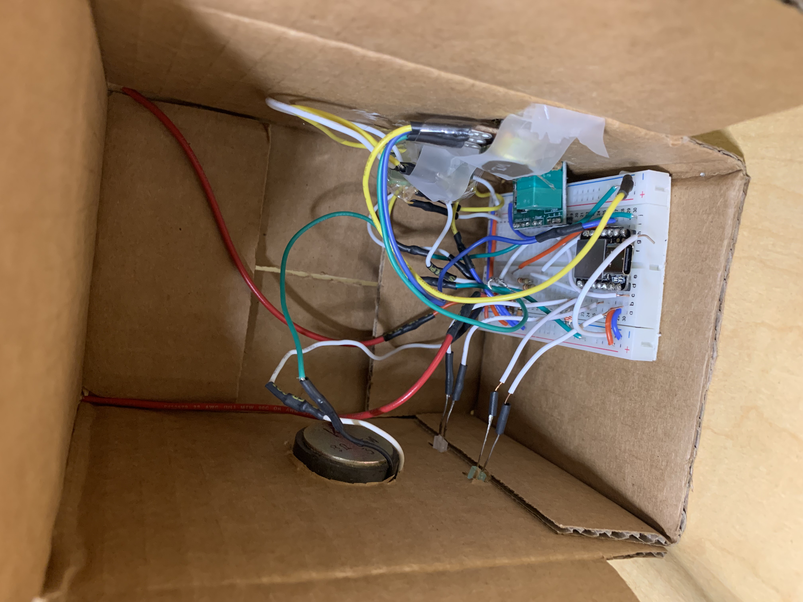

Here are some of the art pieces that I've created.
Scroll down to see or click home to go back
This is called a Micro-Box, it is built with a speaker, 2 led lights, 2 switches, a toggle switch for speed, and a toggle switch for volume. Everything is connected with wires that would be linked to a breadboard to create a circuit and it’s powered by the XIAO that would be connected to your computer. After building the circuit, we used a software called Arduino to code out the function of the MicroBox.
Something that was successful was that every button/toggle works and it does what it suppose to do. The toggle on the top left is the speed, it changed the speed of the song it is playing, the middle switch is the on/off button, and the top right button is the button that changes the song. The bottom center is the volume toggle. One thing that was not so successful was the coding. I wanted to change the song instead of using the class sample code but it was difficult to figure out how to do it.
As for the GSR, shown in the video on the right, I built it with a braided wire with copper tape on the ends of it while the other end of the wire is inserted into the breadboard connected to the XIAO. This will read your sweat glands and will show how nervous or excited you are on the graph. In the video, I was watching my favorite part of Attack on Titan and it started off pretty boring so the graph was going down, but when the exciting part is coming up, the suspense of the video made me excited, the graph started to go up. But when it got to the main part of the show, after the suspense, I realized the graph went down again. It would only go up when it is getting excited, the excitement would bring it down.

For this led project, we are creating a wearable led circuit with serial and parallel circuits. I made my circuit with one parallel and 2 serial on a perf board with 7 led lights. I used solder to connect all the pieces together and tape to attach them to the glove. We made our own custom button or switch to light up the led lights. My “button” is the two fingers touching, the index and the thumb, to create a heart sign. When the two fingers touch, the led lights turns on. I specifically wanted to make this design because the heart sign is something I always do when I post pictures. I want to express that when a heart is made, there would be colorful lights shining in the background. This project was very fun to make but at the same time, it was very challenging.

This is a brushbot. It is made with the head of a toothbrush, a motor, a switch, a led light, and the whole thing is powered by a coin cell battery. I use solder to connect my pieces and I tried my best to make the wires shorter so that the whole circuit would fit on top of a toothbrush head. In the end, I used double-sided tape to put the coin cell on top of the toothbrush head and tape the rest of the circuit on top of the coin cell.
This piece of art was made when the COVID-19 pandemic started. During this time the whole country was locked down, everybody was quarantined. This image shows a bird trapped in a cage, representing the people at the time were being trapped at home. The glitch of the image represents confusion and fear people were experiencing. I thought of using glitches to portray this kind of feeling because when people see a glitch, often this happens when something is wrong or is broken with their electronic devices. The user is confused on what's going to happen next and how they are going to fix this problem. Oftentimes, they would feel the anxiety of what if it can't be fixed.
This is a watercolor painting of a self-portrait. The meaning behind this piece is to show that everybody puts up a facade of greatness but in reality, we all have our ugly thoughts. Racism,we all say we are not racist but truthfully, we all are. We just don't show it. No matter where we learn it from, either from our parents or from the environment we grew up in, we will be biased against certain races.
Trapped in Yourself was a piece I made that represent myself. I always hold my feelings in and not let anyone know how I truly feel. I always have a mask on which is like the ball in the picture. But once people get to know me, it's like looking at the inside of the ball above, and learning about the stories contained within.
For this piece, I downloaded a few objects and the girl figure from Google Poly and combined them together in MeshMixer. After I created this figure, I uploaded it onto Sketchfab and made it into a VR perspective. When looking through virtual reality glasses, you would see only the outside of the ball but once you move a step forward, you will see what’s inside the ball.


For this piece, I downloaded a human male body from Google Poly and used MeshMixer to edit the animal body parts on it. After I finished with the figure, I uploaded it onto Mixamo to add the animation. I made it a hip hop dancer and then uploaded that onto Sketchfab. On sketchfab, I made it into a metallic material so it looks shiny.
This is a gif image of the city glitching. I downloaded an image from Google and opened the image in text form in TextEdit. By changing the code I was able to create this glitch effect. I made four different glitch images and layered them together in photoshop by creating a frame animation.

This is a gif of the San Francisco fog. I grew up in San Francisco so I really like the morning fog in the city. I used the video timeline on photoshop to make this piece. In order to get the motion effect for the fog, I had to crop out the parts that I wanted to move.
Email: Tiffanychen112699@gmail.com
Wechat: tiffany1882
Phone number: (510)815-1882